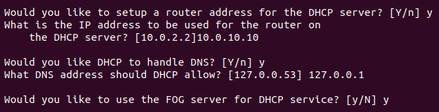

Instalació i configuració del servidor FOG
Per instal·lar el servidor entrarém amb usuari root, i utilitzarém git per clonar el repositori de fogproject:
Iniciem l'instalació amb l'script bin/installfog.sh. Iniciarém l'instal·lació indicant que utilitzem un servidor basat en debian:
Com aquest serà l'unic servidor que instal·larém el configurem com un servidor Normal:
Sel·leccionarém l'interfície enp0s8 per donar el servei:
Necessitem un servidor DHCP, deixarém que el propi servidor s'encarregui de donar DHCP

Ens demana si volem instal·lar traducció, ssl, si volem cambiar el hostname del servidor i si volem compartir informació amb el FogProject:

Confirmem que l'informació sigui correcta avans de començar l'instal·lació:
Comença l'instal·lació:

Necessitem configurar la base de dades, ho farém entrant a l'ip del servidor, x.x.x.x/fog/management:

Com aquesta és una instal·lació des-de net, ens saltarém fer un backup de la BD existent:

I aquesta és l'interfície de Management del servidor una vegada acabada l'instal·lació: